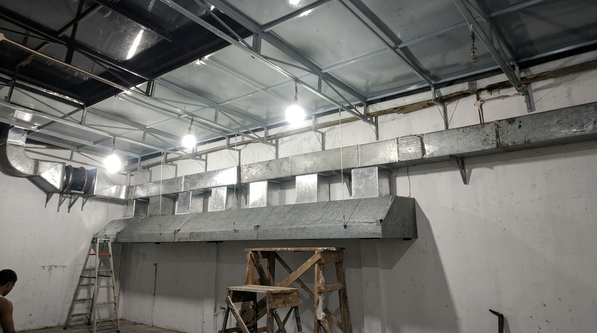

Salah satu keputusan paling penting dalam proyek instalasi ducting adalah memilih material saluran udara yang tepat. Dua pilihan yang paling sering dibandingkan adalah Ducting PU (Polyurethane Pre-Insulated Panel) dan Ducting BJLS (Baja Lapis Seng) Galvanis.
Keduanya memiliki kelebihan masing-masing dan cocok untuk aplikasi yang berbeda. Artikel ini akan membahas perbandingan keduanya secara komprehensif agar Anda bisa menentukan pilihan terbaik sesuai kebutuhan proyek.
Catatan: Tidak ada material yang "selalu lebih baik" — semuanya bergantung pada aplikasi, anggaran, target efisiensi energi, dan kondisi lingkungan instalasi. Artikel ini membantu Anda memilih yang paling sesuai.
Apa itu Ducting PU (Polyurethane)?
Ducting PU adalah panel sandwich pre-insulated yang terdiri dari inti busa Polyurethane (PU) yang diapit oleh dua lapisan aluminium foil di sisi dalam dan luar. Material ini dipotong presisi dan dirakit di lokasi menggunakan sistem groove-and-tongue atau adhesive.
Ducting PU dikenal dengan insulasi termal yang sangat superior — nilai konduktivitas termalnya (λ) hanya sekitar 0.023 W/mK, jauh lebih rendah dibanding glasswool standar. Ini menjadikannya pilihan ideal untuk sistem AC sentral di gedung besar.
Apa itu Ducting BJLS Galvanis?
Ducting BJLS (Baja Lapis Seng) adalah material ducting konvensional berbahan pelat baja yang dilapisi seng (Zinc) untuk melindunginya dari karat. Material ini umumnya difabrikasi menjadi bentuk kotak (rectangular) atau bulat (spiral round duct), dan seringkali diinsulasi menggunakan glasswool serta dibungkus aluminium foil untuk aplikasi AC Sentral.
BJLS merupakan standar industri yang telah teruji sejak lama, tersedia dalam berbagai spesifikasi ketebalan (BJLS 50/60/80/100/120) dan dapat digunakan pada hampir semua jenis sistem tata udara dan ventilasi.
Tabel Perbandingan Lengkap PU vs BJLS
| Parameter | 🟦 Ducting PU | ⚙️ Ducting BJLS |
|---|---|---|
| Insulasi Termal | λ ≤ 0.023 W/mK | Butuh tambahan glasswool |
| Bobot Material | Sangat Ringan | Lebih Berat |
| Kecepatan Pemasangan | 30–50% Lebih Cepat | Standar |
| Harga Material | Lebih Mahal | Lebih Ekonomis |
| Kekuatan Struktural | Sedang | Sangat Kuat |
| Tahan Suhu Tinggi | Maks. 80°C | Hingga 200°C+ |
| Hemat Energi AC | Sangat Hemat | Tergantung insulasi |
| Aplikasi Exhaust | Tidak Cocok | Sangat Cocok |
| Tersedia di Pasar | Terbatas (Impor) | Sangat Mudah |
Keunggulan & Kelemahan Ducting PU

Perbandingan visual panel ducting PU (kiri, berwarna putih-silver) dan seksi ducting BJLS galvanis (kanan) sebelum instalasi.
Kelebihan Ducting PU
- Insulasi termal paling superior — tidak ada kondensasi
- Bobot ringan, mengurangi beban struktur plafon
- Pemasangan 30–50% lebih cepat (sistem interlocking)
- Permukaan dalam halus → pressure drop lebih rendah
- Tidak perlu pekerjaan insulasi tambahan
- Penghematan energi AC jangka panjang signifikan
Kekurangan Ducting PU
- Harga material lebih mahal (2–3× BJLS)
- Tidak tahan suhu tinggi (maks. 80°C)
- Tidak cocok untuk exhaust dapur / asap
- Ketersediaan terbatas — perlu impor
- Kurang kuat secara struktural untuk pressure tinggi
- Perbaikan lebih sulit dilakukan di lapangan
Keunggulan & Kelemahan Ducting BJLS
Kelebihan Ducting BJLS
- Harga material sangat ekonomis
- Tersedia luas di seluruh Indonesia
- Kekuatan struktural sangat tinggi
- Tahan suhu ekstrem hingga 200°C+
- Cocok untuk exhaust, fresh air, dan HVAC
- Mudah diperbaiki dan dimodifikasi di lapangan
Kekurangan Ducting BJLS
- Perlu pekerjaan insulasi glasswool terpisah
- Lebih berat — instalasi lebih lama
- Risiko kondensasi jika insulasi tidak merata
- Pressure drop lebih tinggi (permukaan lebih kasar)
- Biaya tenaga kerja instalasi lebih tinggi
Bingung Pilih Material yang Tepat untuk Proyek Anda?
Konsultasikan dengan tim engineer kami — gratis estimasi dan rekomendasi material.
Kesimpulan: Kapan Pilih PU? Kapan Pilih BJLS?
Pilih Ducting PU jika:
- Proyek sistem AC sentral gedung perkantoran, hotel, mall, atau rumah sakit
- Target efisiensi energi tinggi dan penghematan listrik AC jangka panjang
- Anggaran proyek memungkinkan investasi lebih awal demi penghematan operasional
- Lokasi instalasi di area plafon gypsum dengan keterbatasan beban struktural
Pilih Ducting BJLS jika:
- Proyek exhaust dapur, ventilasi industri, atau area bertekanan tinggi
- Anggaran material terbatas namun membutuhkan ketahanan dan kekuatan tinggi
- Sistem yang akan terpapar suhu tinggi dari proses memasak atau produksi
- Kebutuhan fleksibilitas modifikasi dan kemudahan perbaikan di lapangan
Tidak ada jawaban yang mutlak — banyak proyek besar justru menggunakan kombinasi keduanya: BJLS untuk jalur exhaust dapur dan area suhu tinggi, sementara PU untuk jalur supply dan return AC di area plafon gypsum. Konsultasikan dengan tim kami untuk rekomendasi terbaik sesuai layout dan anggaran proyek Anda.